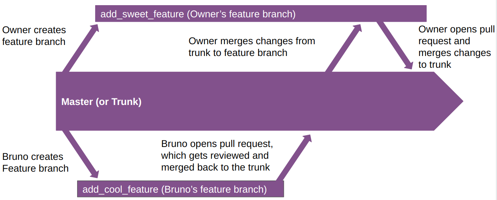

git init # 初始化
git status # 查看状态
git add <filename> # 将文件的更改添加到commit
git add . # 将所有文件的更改添加到commit
git commit -m <message> # 提交更改和信息
git stash # 隐藏某次更改
git log # 查看commit的记录
git revert <hash> # 退回到某次commit1 Part1: Don’t Repeat Yourself
1.1 Version control with Git
1.1.1 Git superbasics
1.1.2 Git and Github
1.2 Collaborating using Trunk-based development
1.2.1 TBD basics
git clone <ssh> # 克隆仓库到本地
git checkout -b <branch name> # 建立新的分支
git checkout <branch name> # 切换到分支
git push origin <branch name> # 推送分支，然后再GitHub创建pull request1.2.2 Handling conflicts

1.2.3 Make sure you blame the right person
git blame <file name> # 查看文件的更改记录1.3 Literate programming
1.3.1 Keeping it DRY
knit_child
参数化报告